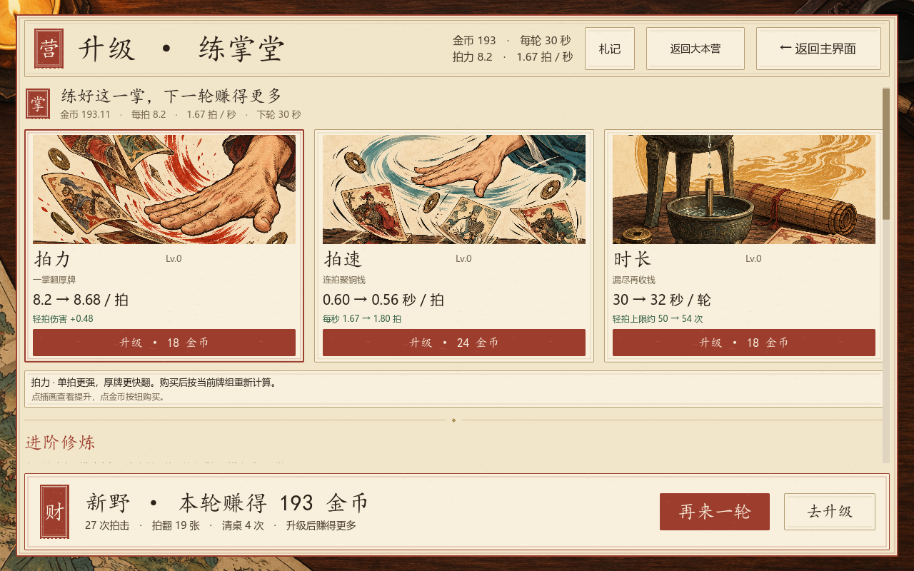
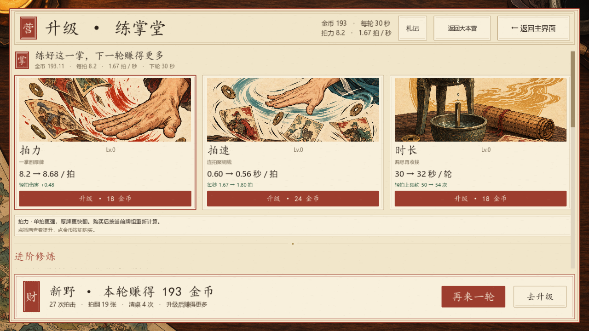
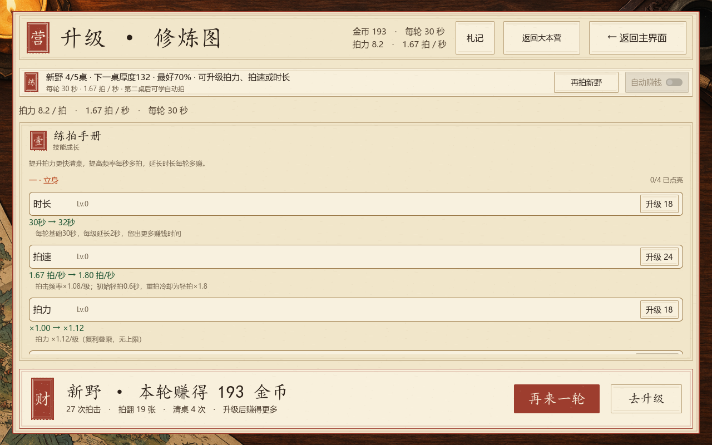
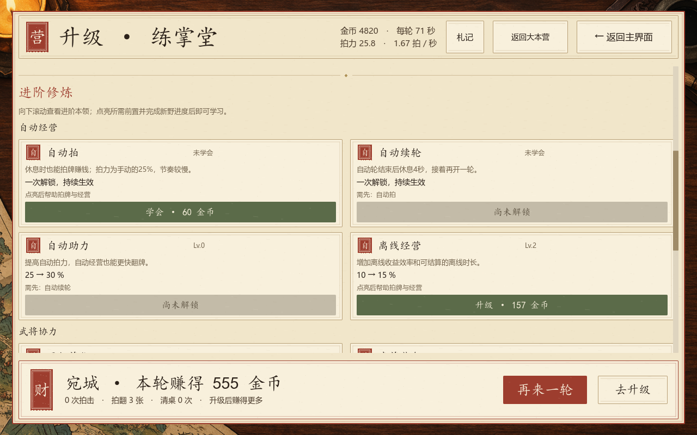
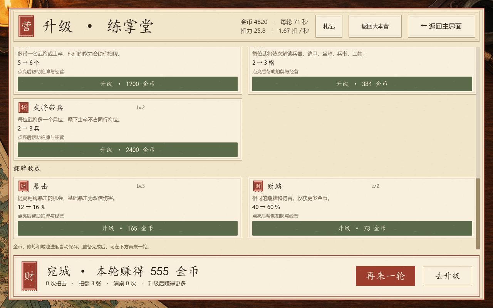

核心三项 · 首屏可买
一掌更强、同样时间拍得更多、延长下一轮。数值预览包含当前牌组的武将、装备和建筑修饰。

实际限时轮结束后进入升级页；金币按钮执行真实购买。
查看 1280×720 窗口

较小窗口仍保留三个核心购买按钮与战后再来一轮入口。查看迭代前的文字技能树

v2.0 原版升级树，供前后对照。进阶修炼 · 按用途分组
自动经营、武将协力、翻牌收成共九项。尚未解锁时显示缺少的技能或新野桌次；金币不足时显示还差多少。

中期测试档展示自动经营与武将协力；全部项目延用实际后端门禁。
查看底部武将与收成升级

滚动到底可到达最后一项，战果和下一轮入口持续可见。已完成验证
升级专项 125 / 125限时循环 444 / 444卡牌美术布局 5551 / 5551实机 800 / 720 高度